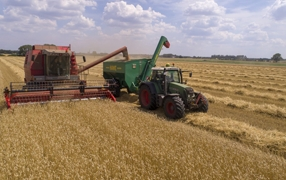
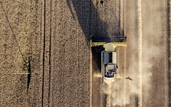
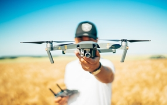
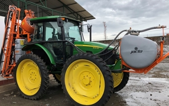
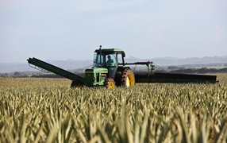
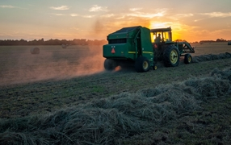
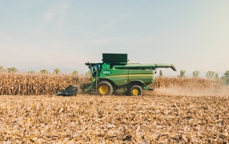
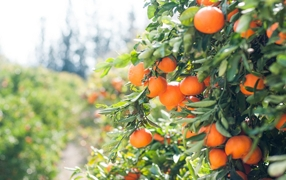
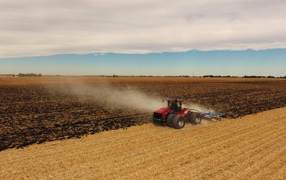

Новости и мероприятия
Новости компании

15 июня 2019
LOZOVA MACHINERY основательно подготовились к весне и презентовали эффективные решения выгодного земледелия... Латвии. На выставку Ka Pasesi-2019 (4-6 апреля, ... Каунас) украинская компания привезла короткие дисковые бороны ДУКАТ с шириной захвата 3 метра. За несколько лет на рынке Латвии техника украинского бренда заслужила хорошую репутацию и закрепила свои позиции.

18 февраля 2019
Как говорится в сообщении компании, обе модели оснащены новыми уровнями мощности и функциями премиум-класса, что делает их идеальным выбором для перевозки сена... и удобрений, универсальным для работы с погрузчиком.

19 мая 2019
Парад техники приуроченный ко Дню Святого Николая и открытие главной елки в городе. Участниками новогоднего парада стали... агро-компании Украины — «НПК» Урожай »,

19 мая 2019
Новый вариант правил ограничения на полеты дистанционно пилотируемых воздушных судов (дронов) практически полностью соответствует... потребностям пользователей этих технологий.

19 мая 2019
Компания «Цеппелин Украина» представила аграриям новую систему управления сельхозмашинами — Zeppelin Smart Solution... основу легли технологии... применяются в строительном и горном бизнесе, увеличивая пользу и эффективность роботы техники.

19 мая 2019
АО «КазАгроФинанс» (входящее в структуру Нацхолдинга «КазАгро») с начала 2018 г... профинансировало приобретение... казахстанскими аграриями более 1 тыс. ед. сельхозтехники на сумму 13,6 млрд. тенге. Об этом 11 мая сообщила пресс-служба «КазАгро».

5 апреля 2019
Херсонский машиностроительный завод совместно с финской компанией уже выпустил восемь комбайнов, а в будущем сможет... ....обеспечивать сельхозтехникой и другие... регионы. Как передает "ПроАгро" со ссылкой на “Укринформ", об этом нзаявил президент Международной общественной организации "Землячество Херсонщины" Юрий Гусев.

10 апреля 2019
Одним из основных приоритетов Министерства аграрной политики и продовольствия Украины является привлечение инвестиций в отрасль... сельхозмашиностроения. Об этом заявил министр аграрной политики и продовольствия Украины Тарас Кутовой, сообщает пресс-служба Минагропрода. Как передает "ПроАгро" со ссылкой на “Укринформ", об этом нзаявил президент Международной общественной организации "Землячество Херсонщины" Юрий Гусев.

15 июня 2019
LOZOVA MACHINERY основательно подготовились к весне и презентовали эффективные решения выгодного земледелия... Латвии. На выставку Ka Pasesi-2019 (4-6 апреля, ... Каунас) украинская компания привезла короткие дисковые бороны ДУКАТ с шириной захвата 3 метра. За несколько лет на рынке Латвии техника украинского бренда заслужила хорошую репутацию и закрепила свои позиции.

18 февраля 2019
Как говорится в сообщении компании, обе модели оснащены новыми уровнями мощности и функциями премиум-класса, что делает их идеальным выбором для перевозки сена... и удобрений универсальным для работы с погрузчиком.